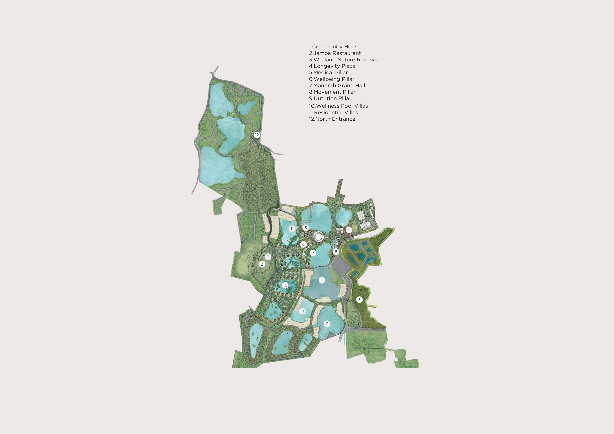

Before You
Arrive
This isn't really a tour.
Take your time with it.
Notice how the land opens as you move, how the day finds its own rhythm, and how easily things begin to align.
A simple map is included for reference. We suggest light, comfortable clothing for walking. There's no set pace — move as you feel.
There's nothing to assess.
Just notice if it feels right.
